AI Academy · Level 1 · Grade 6 · Week 36 · Student lesson
Expo and Defense
Learn to understand, design, build, test and explain AI systems responsibly.
Project: Helpful Classroom Sorter
Before you start
Weeks 29–35: connect requirements, a decision trace and evaluation evidence.
Plan time to read, investigate and explain. Keep predictions separate from observations.
Student lesson · 1 of 17
Your mission
Your learning target
I can evaluate a saved candidate and a manual baseline fairly.
I can defend a conclusion using results, failures and limits.
I can explain the rules, privacy choices and human control in your project.
Remember before reading
Close your notes first. A rough first answer helps us choose the right starting point; it is not a score for your ability.
Without opening the old lesson, explain one key idea from Improve One Cause. Give an example and a mistake that the idea helps you avoid.
Without opening the old lesson, explain one key idea from Test Normal Cases. Give an example and a mistake that the idea helps you avoid.
Without opening the old lesson, explain one key idea from Choose Inputs and Outputs. Give an example and a mistake that the idea helps you avoid.
After trying, check the relevant lesson or ask your teacher. Change the part of your explanation that the evidence shows was wrong.
Understanding is shown by explanation, transfer, testing, and limits.
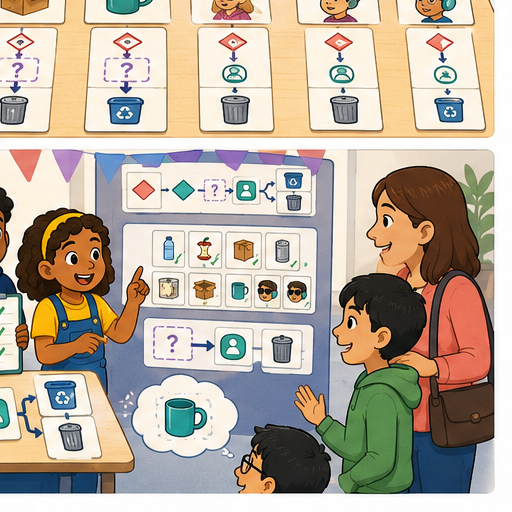
Learner name:
Readiness for the connected explanation
You change a candidate after seeing a final test fail. Can the same case be an unseen final test of the new version? Explain.
This week’s end goal
By the end, I can defend a project using measured results, limits and an honest baseline comparison.
Student lesson · 2 of 17
Notice the evidence
PICTURE STORY
Look Closely Before You Explain
Pictures give clues; evidence tells us what the clues mean.

What do you notice?
Name three visible details without explaining them yet.
Circle the detail most connected to the system's decision.
Name one detail that may be decoration or distraction.
Make a first prediction and state the clue that supports it.
My observations, prediction, and evidence:
A closer explanation
This week you will evaluate your activity adviser and explain what its evidence supports. A project with an honestly reported failure can show strong understanding. Save your candidate instructions, version label, input rules, development records and known problems before your teacher reveals the final requests and catalogue. Keep the instructions unchanged during this evaluation.
The agreed rule remains: validate whole available minutes from 0 to 30 and Quiet required Yes or No. No allows quiet or nonquiet activities. Start at the first row and suggest the first activity whose time is no more than available time AND whose quiet label satisfies the request. Explain the choice. If all rows fail, report no match. Invalid or missing input needs clarification before searching. Clear the previous output for each run.
Your teacher will supply a fresh, labelled catalogue in the same format. Its values are test inputs, not permission to rewrite your instructions. All materials are assumed available. The manual baseline checks every row against the same requirements, then selects the first fit. Both methods advise only; neither books, publishes or chooses on a person’s behalf.
Student lesson · 3 of 17
See how it works
VISUAL MECHANISM
Input → Process → Output
Follow the information instead of imagining magic inside the machine.
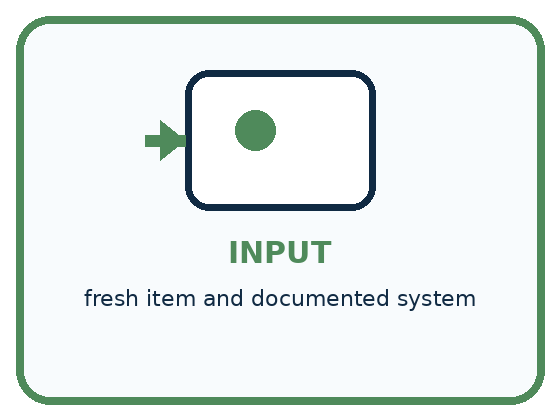
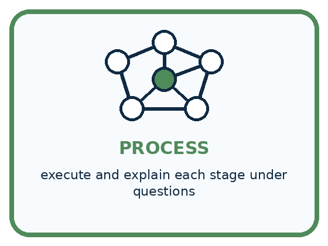
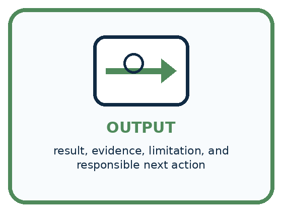
INPUT fresh item and documented system
PROCESS execute and explain each stage under questions
OUTPUT result, evidence, limitation, and responsible next action
Draw a fresh example with all three stages:
A closer explanation
From saved version to supported claim
Use the same final requests, catalogue, requirements and full-pass rule for both methods. Record the candidate output and reason before looking at the expected answer. Record the baseline separately; do not copy the candidate result into it. Your teacher holds the answer key. A full pass needs both the required output and a valid reason, including why earlier rows fail when a later row is selected.
For each request record its ID, inputs, catalogue label, candidate label, candidate output and reason, baseline output and reason, and both results after checking. Keep a trace for any failure. Mark unrun cases explicitly. Do not silently correct an observation. If a person misreads an instruction, record that execution error separately from a defect in the written instruction.
Connect the picture and the explanation
Point to the input, the deciding step and the result in this week’s visual. Explain the same step in ordinary words. A picture helps when you can say what each part represents.
Student lesson · 4 of 17
Compare the cases
PICTURE GALLERY
Four Cases, Four Clues
Use the visual cue, then read the evidence carefully.
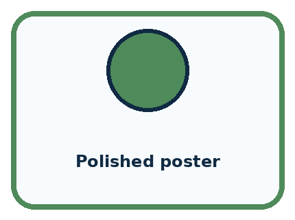
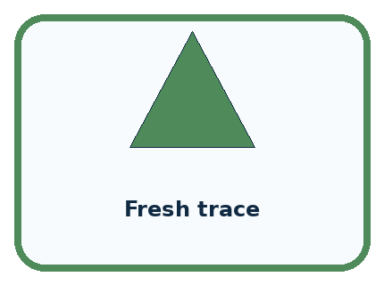
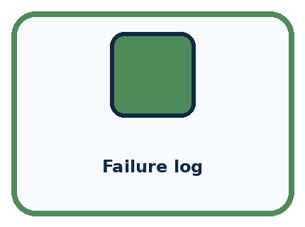
CASE 1 — Polished poster Clue: communication aid. Meaning: not proof alone.
CASE 2 — Fresh trace Clue: unrehearsed application. Meaning: transfer evidence.
CASE 3 — Failure log Clue: honest testing record. Meaning: engineering evidence.
CASE 4 — Human gate Clue: responsible boundary. Meaning: use condition.
Which two pictures are easiest to confuse? What evidence separates them?
Change one thing in the pictured case
Change: Someone adds the two unrun cases to the denominator as failures.
Prediction: That reports a different measure, 8/12 completed successes out of planned cases.
Reason: It cannot be called the original attempted-case pass rate; distinguish completion from evaluated correctness.
Student lesson · 5 of 17
Words that unlock the idea
VOCABULARY
Words You Can See and Use
The badge is a memory cue; the definition does the real thinking work.
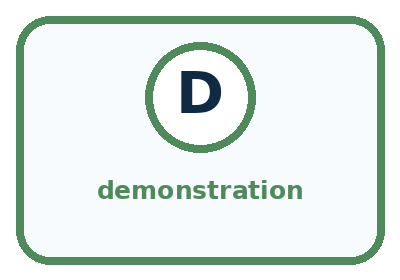
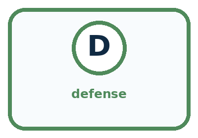
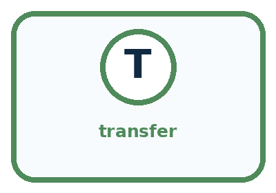
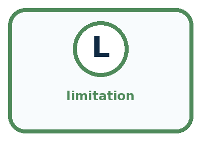
| Word | Meaning | My example |
|---|---|---|
| demonstration | live showing of system behavior | |
| defense | evidence-based explanation under questions | |
| transfer | applying understanding to a fresh case | |
| limitation | condition where performance or use is restricted |
Misconception detective
CLAIM TO REPAIR A successful demo proves every case will work.
Use one vocabulary word and one piece of evidence to repair it:
Words used in the closer explanation
| Word | Meaning |
|---|---|
| Final evaluation | Testing a saved candidate under stated conditions after development |
| Baseline | A comparison method tested under the same conditions |
| Evidence | Recorded observations that support or challenge a claim |
| Defence | An explanation of a decision using evidence and reasoning |
Student lesson · 6 of 17
Follow a worked example
WORKED EXAMPLE
Watch the Reasoning, Not Just the Answer
Every step connects a claim to observable evidence.

STEP 1 — OBSERVE fresh item and documented system
STEP 2 — TRACE execute and explain each stage under questions
STEP 3 — CONCLUDE result, evidence, limitation, and responsible next action
What new evidence could change this answer?
A closer explanation
Here is a fictional example from a different project, not your class results. A candidate has 6 full passes from 8 attempted cases; the baseline has 8 from the same 8. Two more planned cases were not run. The candidate passed 75 percent of attempted cases; the baseline passed 100 percent. Neither has evidence for the two unrun cases. The candidate did not outperform the baseline on this measure.
| Evidence | Supported statement | Claim to avoid |
|---|---|---|
| 6 of 8 full passes | Six attempted cases met the full rule | It works for every request |
| Both methods pass the same cases | They tie on this measured result | Automation must be better |
| A time was not measured | Speed is unknown | The candidate is faster |
| Only fictional catalogue data | Results concern these test conditions | People will enjoy every suggestion |
Explain each failure and its consequence instead of hiding it inside a total. Even perfect results on a small reserved set do not establish reliability in every situation. Our paper adviser applies human-written rules; it has not learned a model from training examples. It checks compatibility, not enjoyment, popularity or real material availability.
Learn from the worked case
Cover the result before checking it. Say what is given, choose the procedure, and follow one step at a time. Then uncover the result and explain your first mismatch. Ask why a step is allowed, not only what number it produces.
A pictorial worked case: Expo and Defense
A fictional paper sorter team prepares an exhibition evidence board.
The facts we will use
Both prototype and manual baseline attempt the same 10 reserved cases. Prototype passes 8; baseline passes 9.
Two additional planned cases are unrun. No timing or pupil-satisfaction measures were collected.
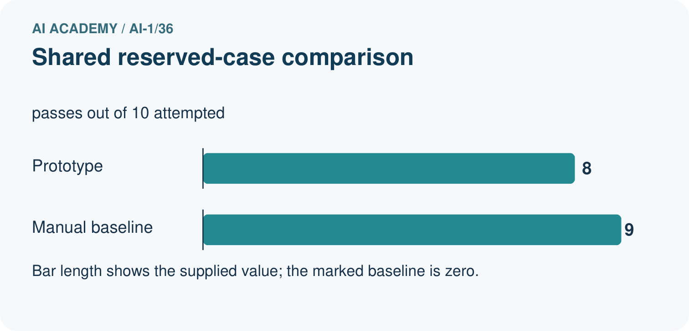
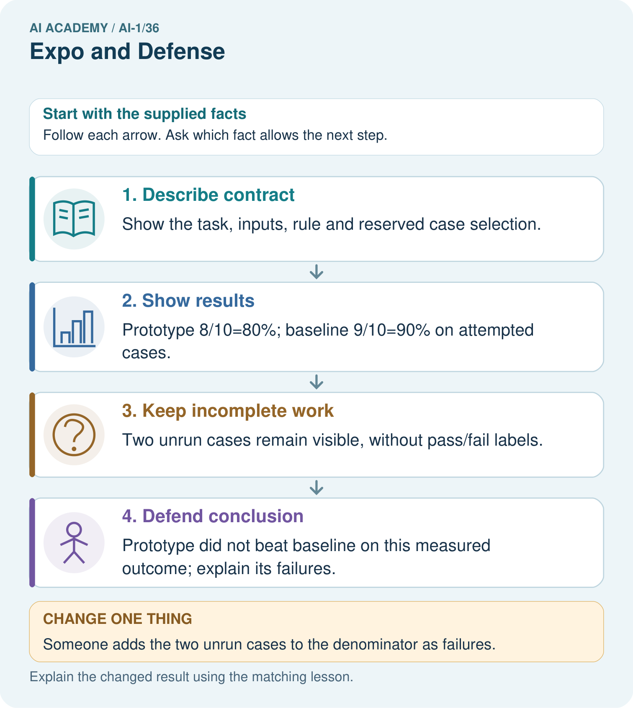
Read the picture one step at a time
Why this result follows
An exhibition should make the evidence inspectable. A polished demonstration is not a substitute for the reserved-case record. The shared cases allow a direct descriptive comparison of pass rates; missing timing data prevents a claim that the prototype is faster. Unrun cases must not be treated as successes.
What this example does not establish
This fictional evaluation does not demonstrate classroom learning impact or performance on every future request.
Read the labelled picture: Write one defensible success statement and one claim the evidence cannot support.
Change one thing: Someone adds the two unrun cases to the denominator as failures. Predict the result before checking the explanation. What remains the same?
Student lesson · 7 of 17
Find and repair a mistake
COMPARE
Same Result, Different Reason
A comparison helps reveal the true concept boundary.
| Case | Evidence | What it shows |
|---|---|---|
| Polished poster | communication aid | not proof alone |
| Fresh trace | unrehearsed application | transfer evidence |
| Failure log | honest testing record | engineering evidence |
| Human gate | responsible boundary | use condition |
Repair two tempting claims
CLAIM A A successful demo proves every case will work.
Repair:
CLAIM B Admitting a limitation lowers the quality of the project.
Repair:
A closer explanation
Archive the evaluated candidate and its original results. If you repair it after evaluation, give it a new version label and use revealed cases as development checks. Do not relabel them as unseen. Ask your teacher for fresh reserved cases only after the revision is fixed. Do not erase the first result.
Write one conclusion limited to the actual conditions tested and one specific next step. It may be better to keep the manual baseline. Grade 7 will turn carefully stated procedures into programs and examine data more closely. Carry forward the habits of validating inputs, recording evidence and keeping people in control.
Student lesson · 8 of 17
Practise together
GUIDED PRACTICE
Try It, Check It, Explain It
Use support now so you can succeed independently later.

Explain how the picture story demonstrates this idea: Understanding is shown by explanation, transfer, testing, and limits.
Use a fresh example to explain demonstration.
Trace a new input → process → output example.
Find and repair the error in: Admitting a limitation lowers the quality of the project.
Invent one edge case and name the safe response.
A closer explanation
Prepare a short explanation using your saved instructions, one complete trace, the final comparison, and a limitation. State the problem and whose choice the adviser supports. Explain validation, both matching conditions, first-fit order, reset and stopping. Show the exact instruction behind your trace. Describe any repair with its old evidence, or say honestly that no repair was needed.
Use only fictional requests and the two necessary input fields. Do not collect names, diagnoses or reasons a pupil prefers quiet. A quiet request is enough. A person may decline the suggestion; a teacher checks real materials and local rules before an activity. A successful output grants no permission to book or publish.
For a two-minute partner presentation, use this order: problem and rule; trace; candidate versus baseline results; failure or limitation; next action. Partners swap speaker and listener roles. Each person must explain one trace independently. The listener asks which recorded observation supports the main claim; attractive slides cannot substitute for that observation.
Practise with less help: Keep the final evaluation record
Use workbook W2 for the connected example “Evaluating and explaining your project”. First fill the input and rule boxes. Try the middle steps before asking for a hint. After a hint, try the next step yourself.
| Plan | Do | Check |
|---|---|---|
| What is given? Which rule or procedure applies? | Record each intermediate step. | Does the result follow? What remains unknown? |
Explain your trace to a partner. Your partner points to one step to check. Swap roles on the next case. Each person writes their own explanation.
Check your reasoning
Use the worked case for Evaluating and explaining your project. Proposed explanation: “A polished presentation proves the system works”. Decide whether this explanation is supported. Point to the step or supplied fact that decides; explain your repair if needed.
Answer on your own before discussion. If you are unsure, say which step you need help with.
Explain the picture
Write one defensible success statement and one claim the evidence cannot support.
This is supported practice. Keep the separately named independent case for an attempt before feedback.
Student lesson · 9 of 17
Run the investigation
EXPLORER LAB
Responsible Classifier Expo
Predict first, test honestly, and explain what the evidence means.

State your prediction before the result is known.
Complete the task: Demo the system, solve a fresh case, and answer why it may fail.
Keep a normal case and an edge case clearly separated.
Record what happened—even when it does not match your prediction.
Explain the result, one limitation, and the next useful test.
| Case | Prediction | Observed result | What it means |
|---|---|---|---|
| Normal | |||
| Edge |
Plan → try → check
Before trying: what do I expect, and why? While trying: which step could first go wrong? Afterwards: what did I actually observe, and what should change? Keep “not run” if you only traced the procedure.
Student lesson · 10 of 17
Build your understanding
PRACTICE LADDER
Climb from Recall to Defense
Each step asks for a stronger kind of understanding.

RECALL Define demonstration.
EXPLAIN Understanding is shown by explanation, transfer, testing, and limits.
TRACE Show the input, process, and output.
DIAGNOSE Repair: A successful demo proves every case will work.
TRANSFER Apply the idea to a new home or classroom case.
CREATE Design one revealing test.
DEFEND Give a claim, evidence, mechanism, limit, and safe action.
Student lesson · 11 of 17
Connect your project
PROJECT
Helpful Classroom Sorter
Build one coherent system across the year, one evidence-based decision at a time.

What real classroom need does this serve?
What information is necessary—and what should stay private?
What happens inside the process?
What normal and edge cases will you test?
When should it say not sure or ask a person?

My project decision:
Evidence for your project
Present the Helpful Classroom Sorter’s versions, test records, baseline, failures and next investigation as an evidence portfolio.
Student lesson · 12 of 17
Show what you know
MASTERY
Fresh-Case Independent Proof
Complete this after teaching and guided practice have ended.

□ Name or draw the fresh case.
□ Trace input, process, and output.
□ State the conclusion and strongest evidence.
□ Name one limit, failure, missing clue, or fairness/privacy concern.
□ Explain one safe next action or improvement.
Independent evidence:
My level: □ Not yet □ With one hint □ Independently □ I can teach it
Student lesson · 13 of 17
Study a complete case
Week 36 Worked case
Use the supplied details to practise the weekly concept before attempting the independent question. This case extends the illustrated lesson.
The situation
The expo poster says always correct after six classroom passes.
The question
Write a defensible claim.
Worked explanation
Report six specified passes with conditions and limits. Show an input, decision trace, output and test record, including an uncertain case.
Explain it in your own words
Which detail supports the answer, and why does it matter?
Trace the supplied case visually
Defend a claim with a complete trace
| Evidence or stage | Value or result |
|---|---|
| Input | Show a specified test object |
| Decision | Explain its path |
| Output | Show the tray or review result |
| Evidence | Report six classroom passes and limits |
The expo poster says always correct after six classroom passes.
Write a defensible claim.
Report six specified passes with conditions and limits. Show an input, decision trace, output and test record, including an uncertain case.
Student lesson · 14 of 17
Try a new case independently
Independent case: Judge a different project independently
A fictional library adviser and its manual baseline face the same 6 reserved cases. The candidate has 4 full passes; the baseline has 5. One additional planned case is unrun by both. No speed data was collected. The team says “ours is faster and more reliable everywhere” and repairs it after seeing the failures. Explain what the counts support, two unsupported claims and how to label a rerun of the revealed cases.
Attempt this case before feedback. Record any help. Earlier examples below are further practice; a case already practised with feedback cannot establish fresh transfer.
Week 36 Independent application
Close the worked explanation. Apply the idea to this different question without copying.
At the expo, a team says our sorter never fails after testing four cards. Replace the claim with an evidence-based statement and name a next test.
My answer, with a trace, calculation or supporting evidence
Create and test
Change one relevant detail. Predict the result before testing. Include a boundary or missing-information case when it helps reveal a limit.
My changed input and expected result
Connect to your project
Present the final Classroom Sorter portfolio and complete the AI-1 certification defense.
The evidence I will keep
Your teacher has the independent answer and scoring criteria. Complete the matching workbook week to keep your practice evidence together.
Transfer practice from the original programme
Defend a sorter with 10/12 routine successes and 2/4 mixed-material successes. Report overall and separate results, show one failure and propose a justified next step. What claim would overstate the evidence?
Use feedback to improve
Attempt the independent case before hints. Record whether you worked alone, used a hint or followed a model. After feedback, fix the first unsupported step and explain why it changed. A later check uses a changed case, not a copied answer.
Student lesson · 15 of 17
Your lesson route
Start with this question: A fictional paper sorter team prepares an exhibition evidence board.
| By the end, I can | How I will show it |
|---|---|
| Evaluate a saved candidate and a manual baseline fairly | Explain the deciding step, show a trace or test, and state one limit. |
| Defend a conclusion using results, failures and limits | Explain the deciding step, show a trace or test, and state one limit. |
| Explain the rules, privacy choices and human control in your project | Explain the deciding step, show a trace or test, and state one limit. |
Remember → watch and explain → try with help → investigate → try independently → keep project evidence. Your teacher may spread this lesson across several classes.
Keep your first prediction. Compare it with what the evidence shows and explain any change.
Student lesson · 16 of 17
Finish and return
Close your notes. Explain this goal in your own words: Evaluate a saved candidate and a manual baseline fairly
If you are unsure, return to the worked picture and explain one arrow. If you are ready, change an input or assumption and justify your prediction.
Save your workbook evidence. At the next review, try a different case before opening your old answer.
Student lesson · 17 of 17
Supported practice, repair and portfolio
Use this supported practice once, in the browser or on paper. Keep the reserved independent assessment for a separate first attempt before teacher feedback.
A fictional paper sorter team prepares an exhibition evidence board.
Practice 1: explain the deciding evidence
Which labelled step matches this detail? Prototype did not beat baseline on this measured outcome; explain its failures.
1. Keep incomplete work
2. Describe contract
3. Show results
4. Defend conclusion
Hint if needed: Read the steps in the pictorial case. Match the supplied detail to the stage that performs or records it.
After your attempt, compare with the supported explanation: Defend conclusion Prototype did not beat baseline on this measured outcome; explain its failures. An exhibition should make the evidence inspectable. A polished demonstration is not a substitute for the reserved-case record. The shared cases allow a direct descriptive comparison of pass rates; missing timing data prevents a claim that the prototype is faster. Unrun cases must not be treated as successes.
Practice 2: explain the deciding evidence
Changed-case practice: Someone adds the two unrun cases to the denominator as failures. Which conclusion is supported by the supplied facts?
1. We can decide the result without examining the changed input or the procedure.
2. This one example guarantees correct results for every future input.
3. That reports a different measure, 8/12 completed successes out of planned cases.
Hint if needed: Use the changed condition and the deciding step in the pictorial trace. The answer must say what follows from those facts.
After your attempt, compare with the supported explanation: That reports a different measure, 8/12 completed successes out of planned cases. It cannot be called the original attempted-case pass rate; distinguish completion from evaluated correctness.
Repair a missing building block
Review Improve One Cause (ai-1/35). Goal: Repair a located defect without changing the agreed requirements. Short practice: Explain why “our repaired version now picks something” is not enough to show success at 6.. Return to this week and explain what you changed.
Review Test Normal Cases (ai-1/33). Goal: Plan routine cases with expected results derived from the requirements. Short practice: Why is none correct for 8 but incorrect for 6? Use both capacity cards.. Return to this week and explain what you changed.
Review Choose Inputs and Outputs (ai-1/30). Goal: Turn the project outcome into precise input and output requirements. Short practice: Trace requests 10 and blank. Why should they not receive the same explanation?. Return to this week and explain what you changed.
Keep your completed work
Use Download completed work in the hosted lesson to export your answers, reflections, practice feedback and code-run evidence. Open the HTML copy to read or print it. Drafts stay in this browser when storage is available; clear drafts on a shared device.